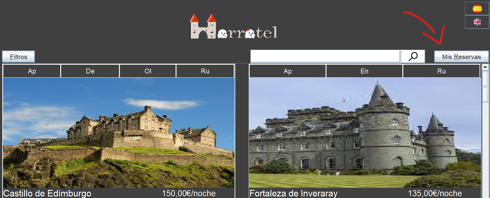
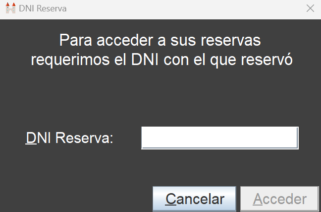
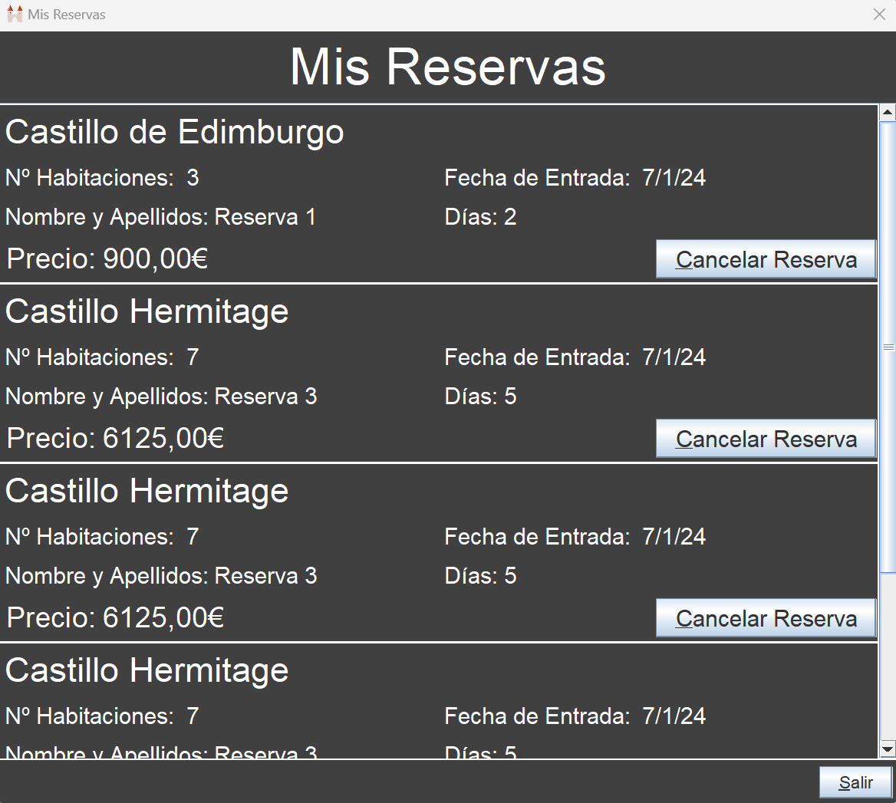

Para acceder al apartado Mis reservas, el usuario primero deberá acceder al catálogo de hoteles por medio de los botones "Empezar" y "Reservar un Hotel". Una vez en el catálogo, en la parte superior derecha encontrará el botón "Mis Reservas"
Al hacer click en dicho botón se abrirá una ventana que informará que para acceder a sus reservas se requiere del DNI con el que fueron efectuadas. Al aportar dicho DNI se abrirá una ventana con las reservas asociadas al mismo
Dicha ventana mostrará al usuario los datos de cada una de sus reservas, entre los que figuran:
Además de esto, el gestor de reservas proporciona la opción de cancelar las reservas por medio del botón "Cancelar Reserva" sin embargo, este debe tratarse con precaución, ya que el hecho de cancelar una reserva es irreversible.
